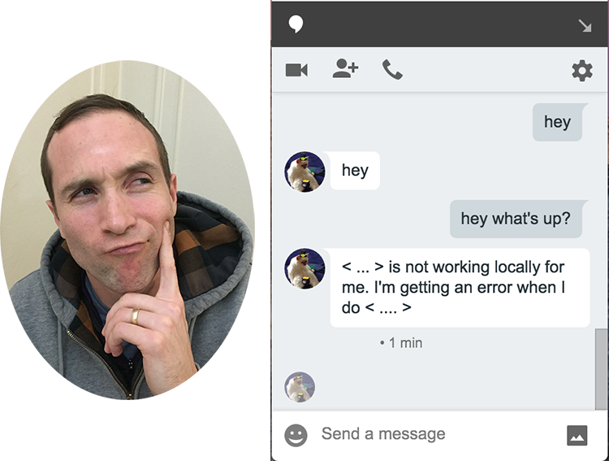
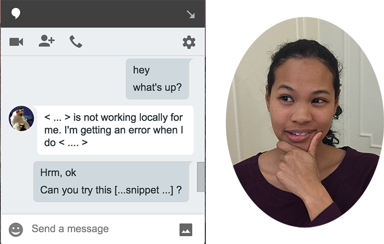
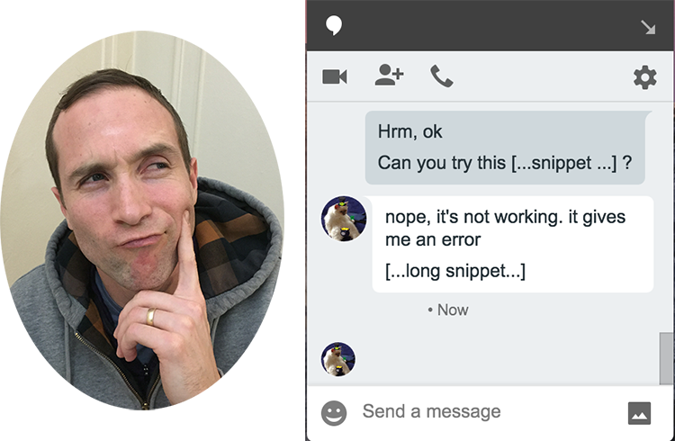
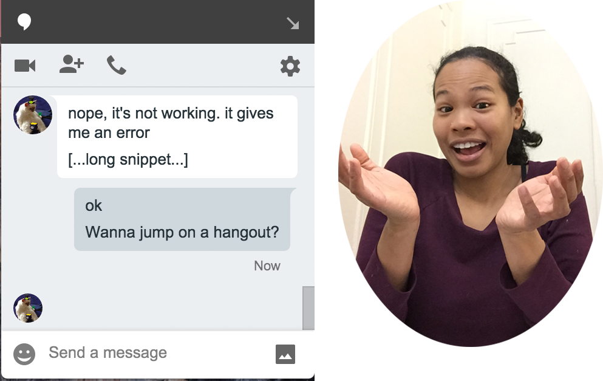
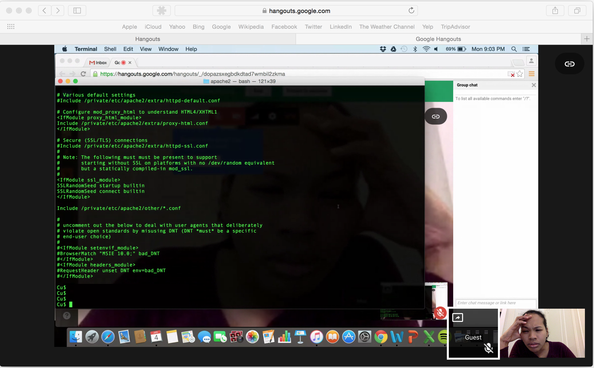
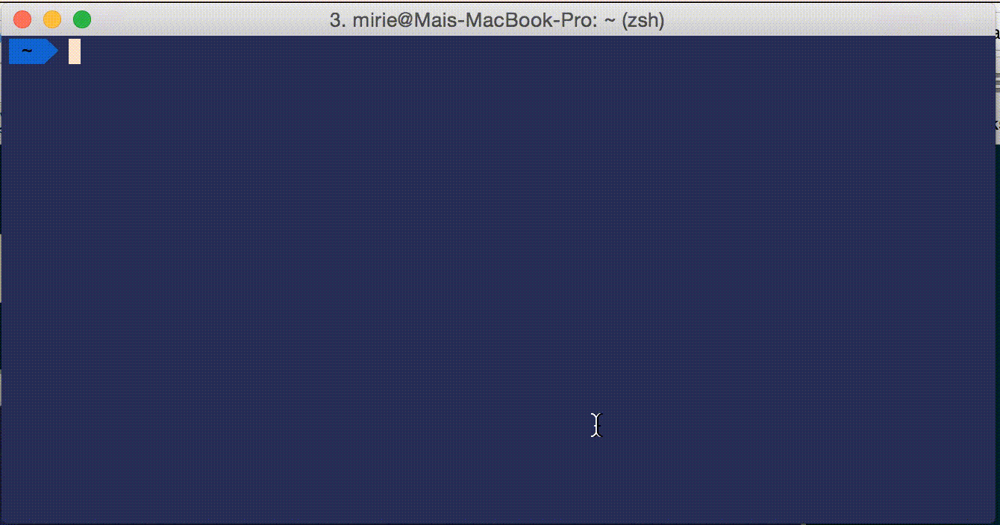
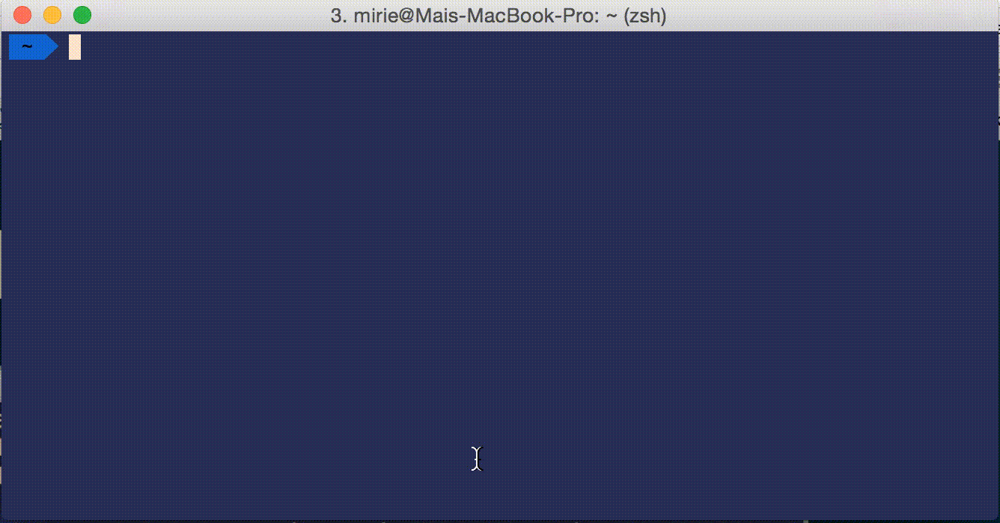
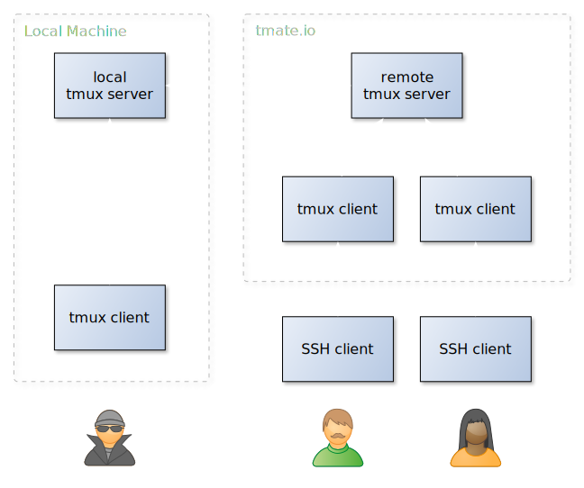
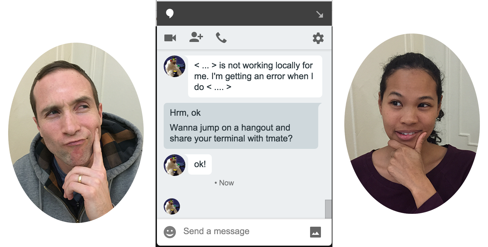

tmate
A cool tool for terminal sharing
By Mai Irie / mirie on d.o.
Hi! I'm Mai.

I'm a senior developer
@ Phase2 Technology
Robbie Holmes
robbiethegeek
Director of Engineering @ Phase2
The Problem
Devs happily coding and working together on a team
Hrm, we've got an issue





tmate to the rescue!
What is tmate?
What is tmux?
tmux is a terminal multiplexer
https://pragprog.com/book/bhtmux/tmux
That means:
- You can switch easily between several programs in a single terminal
- Detach them and keep them running in the background
- Reattach them to a different terminal
- ...and moar!
How to Use?
Sharing a Read/Write Session
HTML5 Client
There is an HTML Client in progress...
However, the client has problems like the tmux key bindings don't work and there are some graphical bugs
Plus...the whole point is terminal sharing...so use a terminal!
Other benefits
Terminal Sharing also opens the door for...
Pair Programming!
Remote Pair Programming
Using tmate for remote pair pairing is straightforward
- Grab a good headset with a microphone
- Jump on Google Hangouts, Skype, etc
- Run tmate
- Share a read/write session with your partner
- Edit with vim
- Celebrate!
How to Install?
Mac OS X
You need to have Homebrew installed as a prerequisite.
brew update && \
brew tap nviennot/tmate && \
brew install tmate
How to Install?
Ubuntu
Ubuntu 12.04 and up have published packages for tmate.
sudo apt-get install software-properties-common && \
sudo add-apt-repository ppa:nviennot/tmate && \
sudo apt-get update && \
sudo apt-get install tmate
How to Install?
From Source
Grab the sources from github: https://github.com/nviennot/tmate.
A few dependencies are required. The Ubuntu packages names are:
git-core build-essential pkg-config libtool libevent-dev libncurses-dev zlib1g-dev automake libssh-dev cmake ruby
./autogen.sh && \
./configure && \
make && \
make install
How does it work?
My connection goes thru tmate.io???
My Shiz is secret...
You can host your own tmate server
Code: https://github.com/nviennot/tmate-slave
tmate server has some package dependencies. Once those are installed on the server, you can install tmate-slave with:
git clone https://github.com/nviennot/tmate-slave.git && cd tmate-slave
./create_keys.sh # This will generate SSH keys, remember the keys fingerprints.
./autogen.sh && ./configure && make
sudo ./tmate-slave
...Set up the ~/.tmate.conf file
...And start your server with the following command:
tmate-slave [-k keys_dir] [-l logfile] [-p port] [-h host] [-v]
Additional info on hosting your own tmate Server
- https://tmate.io/
- Docker instance: https://github.com/nicopace/tmate-docker
- CentOS 6.5 install guide: https://github.com/nviennot/tmate-slave/wiki/How-to-Install-tmate-slave-on-CentOS-6.5
Our scenario revisited...


Additional Resources
- github: https://github.com/nviennot/tmate
- IRC: #tmate (freenode)
- Google Groups: https://groups.google.com/group/tmate-io
- email: tmate-io@googlegroups.com